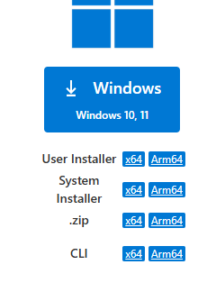
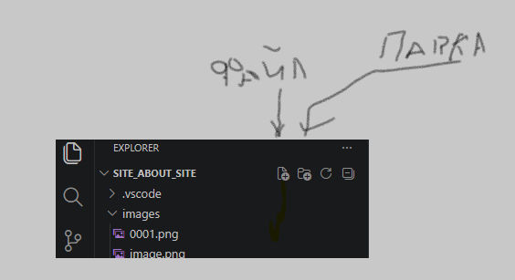

ШАГ 1. Установка редактора.
Первое что необходимо это РЕДАКТОР, в котором будем творить наш сайт.Самый оптимально подходящий редактор выберем Visual Studio Code.
Загружаем только с официального источника.
Visual Studio Code — официальный сайт загрузки ссылка

- Дважды щёлкни по файлу.
- Если появится окно контроля учётных записей Windows — нажми «Да».
- Нажми «Далее» (Next).
- Прими лицензию (I accept the agreement). Оставь путь установки по умолчанию.
- На этапе дополнительных задач полезно поставить галочки:
Add "Open with Code" action (открывать через VS Code).
Add to PATH (очень полезно для Python и Flask).
- Нажми Install. РЕДАКТОР установлен. Теперь подготовка редактора.
ШАГ 2. Подготовка редактора (загрузка расширений (EXTENSIONS))
Как установить
Открой VS Code.
Нажми слева значок Extensions (Ctrl+Shift+X).
Введи название расширения.
Нажми Install.
Подсказки CSS-классов в HTML.
Позволяет открывать HTML-страницы в браузере и автоматически обновлять их при изменениях.
Автоматически красиво форматирует HTML, CSS и JavaScript.
Автоматически меняет парный HTML-тег.
ШАГ 3. Начинаем работать в РЕДАКТОРе. Установка файлов, папок

Устанавливаем нужные файлы и папки.
1. В левом верхнем углу нажимаем на file, из появившемся меню выбираем ,,open folder,,
Создаем папку к примеру ,,My-first-site,, энтэр, и выбираем.
Папка сделана.
2. создаем файл index.html

там где файл\ нажимаем и вводим index.htmlпервая строка вводим знак восклицания ,!, \ появится абреатура\ кликаем\ и появится корневой код хтмл
3. Ниже тега body вводим тег оглавления h1 и пишем между названия сайта\к примеру My first site
в меню опции file(в левом верхнем углу ставим галочку где auto save\ и теперь все ваши изменения )
будут записываться автоматичечки
4. нажимаем на Go live в нижнем правом углу\ и в браузере должен появиться ваш сайт/
это еще не сайт продакшена\ это ваш локальный сайт
5. Таким образом устанавливаем файл style.css
6. Делаем папку images для фото и изображений
7. Подключаем стили в head после meta.
<link rel="stylesheet" href="style.css">
head - служебный раздел
body - то что будетвидно в браузере
body - делится на header\main\footer
header - сюда входит логотип\навигация\оглавление\контакты\о нас
main - оглавление сайта\и содержание сайта
footer - контактная информация, и всякое такое
И все это в двойном теге
Назад к оглавлению
Flexbox (очень важный)
ШАГ 5
Диплоим в Netlify наш сайт.
Это бесплатная платформа для того чтоб выставить ваш сайт в интернет.
ссылка на Netlify
Для обычной загрузки:
зайди на официальный сайт;
нажми Sign up (регистрация);
создай аккаунт
потом Add new site → Deploy manually.
Перетащи папку сайта.
как найти папку сйта:
быстрый доступ на своем папке
нажимаешь на галочку и ищешь где она там в каких разделах
и переносишь ее нажав правой кнопкой мыши в Netlify
это можно посмотреть в первом видеоуроке ссылка вверху
В папке должны быть примерно:
мой_сайт/
├── index.html
├── style.css
├── script.js
└── images/
После загрузки Netlify даст ссылку вида:
название.netlify.app